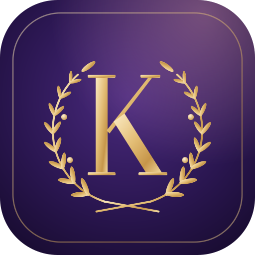

AthénaRègles de confidentialité
Dernière mise à jour : 8 novembre 2026
Athéna est une application privée d'entraînement pour les épreuves sportives du concours de gardien de la paix. Elle est utilisée par un très petit groupe de personnes et n'affiche aucune publicité.
Données enregistrées
- Sur le téléphone : les résultats d'entraînement (chronos, tests, paliers), le planning des séances, les réglages et, si tu utilises la partie nutrition, ton profil (poids, taille, âge, objectif) et tes repas notés.
- Dans l'espace partagé (si le partage entre téléphones est activé) : les mêmes données, rangées sous un code secret connu seulement des personnes qui partagent l'espace. Elles sont hébergées par Google Firebase (Union européenne).
Google Agenda
Si tu connectes ton Google Agenda, Athéna demande uniquement ton adresse e-mail (pour afficher quel compte est connecté) et l'autorisation de créer son propre agenda (« Athéna · entraînement ») et d'y gérer les séances. Elle ne peut ni lire ni modifier tes autres agendas ou rendez-vous.
- Le jeton d'accès Google est conservé de façon chiffrée sur le serveur de l'application (Cloudflare) et sert seulement à mettre à jour cet agenda.
- Les données obtenues via les API Google ne sont ni vendues, ni partagées, ni utilisées à d'autres fins que l'affichage de tes séances. L'utilisation respecte les règles relatives aux données utilisateur des services d'API Google, y compris les exigences d'utilisation limitée.
- Tu peux déconnecter Google Agenda à tout moment depuis l'application (Plan › Agenda › Retirer) : l'agenda Athéna est alors supprimé et l'accès retiré. Tu peux aussi retirer l'accès depuis ton compte Google.
Questions du coach et repas
Les questions posées au coach, et la description des repas à analyser, sont transmises à un service de génération de texte pour obtenir la réponse. Ce service ne reçoit ni ton nom ni ton poids : seulement le texte nécessaire. Ils ne sont pas conservés par ce service au-delà de la réponse.
Suppression
Pour effacer tes données : Réglages › arrêter le partage, puis supprime l'application de ton téléphone. Pour supprimer aussi l'espace partagé, écris à l'adresse ci-dessous.
Contact
remyvancoppenolle@gmail.com